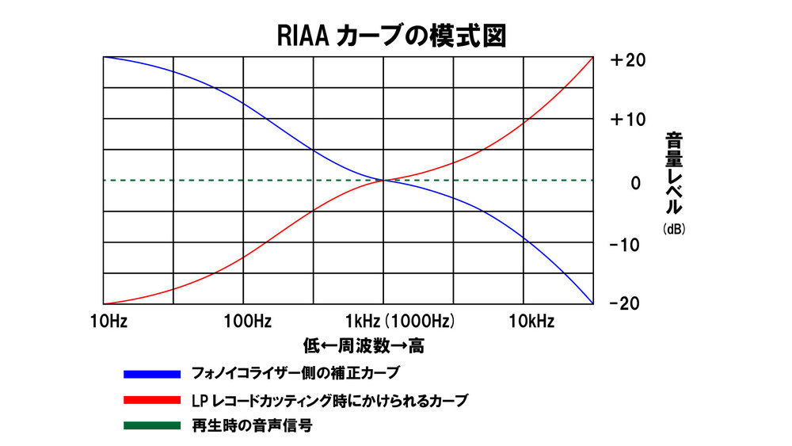

レコード
レコードは音質が良いって聞くけどあんまり信用していない
レコードの仕組み
レコード盤には音波を記録した溝が彫られているが， この溝をレコード針が動くことでカートリッジに振動が伝わる． この振動を電気信号に変換し，アンプで増幅することで音になる． まあこれはいいんだけど，ステレオ再生ができる理由が分かっていない．
従来のモノラル再生は針が左右に動くだけで振動をトレースしている． で，さらにステレオ再生するにはもう一つの情報が必要なので， 単に針を増やす方法が考えられた．しかしこれは同期や信号処理部の難しさなどで発展しなかった． 今使われているのは 45/45 方式というもので，レコードの溝の左右にそれぞれのステレオ音を保存する． こうすると溝に対して 45 度に振動するので，一本の針でステレオを保存できる．
針が音溝に触れて振動すると，針を持っているカンチレバーを通してコイルや磁石に伝えられる． このコイルが磁石の磁界の中で振動することで，電磁誘導が起き，コイルに電気信号が発生する． このときカートリッジに磁石が巻いてあるものを MM 型，コイルが巻いてあるものを MC 型と区別する．
MM, MC カートリッジは高周波であればあるほど電圧が高くなるので (高周波であるほど針の追従速度が速くなるため)， 速度比例型カードリッジと呼ばれる． それ以外にも，針の動きを光の変化として捉える光カートリッジとか． そもそも速度比例型カートリッジないでも音質に違いがあるらしいが， 実際に買って比較できるほどのお金はないのであきらめる．
そもそもレコードが音がいいと言われる理由はおそらくアナログ入力・出力だからだと思う． CD はデジタル変換してしまっているため，解像度(量子化・標本化の部分) であったり，20 Hz ~ 20 kHz のフィルタだったりで音質が悪いといわれる． レコードはこうしたデジタル変換をしていないから，ということで音質が良いと言われているらしい． でもそもそもマイクは 20 kHz までしか再生できないし， カートリッジやプレーヤーがその再生に対応しているのかという問題がある． だから個人的にはフィルタよりも解像度の問題だと思っている． そういうことなら，デジタル mix したレコード盤は音質の面で良さがないことになるが そういうことなんだろうか． 加えてレコードはその再生方法に起因するノイズが大きい(後述)． かなり物理的な再生方法なので回転ムラであったり振動に邪魔される． CD はこうした欠点がない(?)ため，ノイズ的な面では CD の方が音質が良い気もする． だからつまり CD もレコードも一長一短だし「音質が良い」みたいな， 普遍的なようで何にも指標が定まっていない形容詞で表現しないほうが健全だと思っている．
とはいってもレコードを所持したい気持ちはあるし あのデカいアートワークを見たときの嬉しさや，アナログ感のある再生システムとかは好き
レコードの種類
LP とか EP とか色々サイズに違いがある． LP 以外のレコード買ったことないけど SP とかシングルとかめちゃめちゃ種類あって驚いた
材質にも違いがある．一般的なレコードはビニール盤だと思うけど， 同じビニールでもソノシートというめちゃうすいレコードもある． 雑誌の付録についてくるようなもので，楳図かずおのへび少女とかが有名だと思う．
アートワーク
レコードのアートワークは CD 以上に重みがある部品だと思っていたりする． レコード屋とか行くとジャケ買いすることが多い． 打率めちゃくちゃ悪いけど
奥村靫正
多分自分が一番最初に知ったデザイナーだった気がする． YMO の 「BGM」 のアートワークを見たのがきっかけだったような気がする． 「日常」がテーマの中で歯ブラシを選ぶのすごいなあとか思った． WORKSHOP MU!! の設立に参加してはっぴいえんどとか小坂忠とかYMOとかのデザインに関わったらしい． 有名どころは「hosono house」とか「大瀧詠一」とかだろうか，色々あるけど
Hipgnosis
すごく有名だし自分も何枚か知っているけど正直あまり詳しくないので色々調べた．
ピンクフロイドとか T-rex とかたくさんのジャケットを担当している． 自分はピンクフロイドの印象がすごく大きい．「Ummagumma」とか「原子心母」とか．．． T-rex の「Electric Warrior」とか異常にかっこいい
最初に担当したジャケットはピンクフロイドの「A Saucerful Of Secrets」． Hipgnosis とシド・バレットが当時ルームメイトだったからジャケットを依頼したらしい． Hipgnosis のジャケットはアーティスト名やタイトルが全然描かれていないのが印象に残っているが， このアイデアが革新的だったと言われている． 一番有名なのはピンクフロイドの「狂気」だと思うが，これは Hipgnosis が国際的に知られるきっかけにもなった． 当時はバンド側が複数のジャケット候補の中から選ぶらしいが，この「狂気」は完全一致だったという． へえ～～～
Hipgnosis が活動していた時代はもちろん photoshop なんてものはないので 実際に写真撮影をしていた． 「wish you were here」とかガチ燃えしてたらしいけど大丈夫なんだろうか． 頭とか燃えてた気がするけど．
PASCAL TEIXEIRA
phoenix の「Alpha Zulu」が異様にかっこよくて印象に残っている． MV の絵画は全部，既存のものだと思っていたけど描いたものもあると言っていた． マジ？
レコードプレーヤーの接続
なんか本題とずれてしまったので戻す．
レコードプレーヤーはレコード盤の音溝の作り方のために，低周波数帯域と高周波数帯域に 特有の周波数特性がある． 具体的には RIAA カーブといい，高音域の音量を大きくし，低音域の音量が小さくなっている．

これは，低周波の音は他帯域に比べてエネルギーが大きいので，他帯域と同じように収録すると 隣の溝まではみ出したり，収録しきれないような溝を彫ることになってしまう． また，高周波の音は他帯域に比べて小さいので，ノイズの影響を受けやすくなる (スタイラスチップとの接触で起こる表面ノイズとか)． そこで，送信時の振幅を増強することでバランスを保っている． これ以外にも，さっきの速度比例型のように，高周波の動きが速いゆえに出力電圧が 大きくなってしまう，というような理由もある． しかし，このままでは聴くときにシャリシャリした 音質になってしまうのでイコライザーで調整する必要がある． このときにフォノイコライザーが使われていて，RIAAカーブの逆を描くような調整をする． 今ではこの RIAA カーブは規格化されて安定しているが，古い規格が使われていたりすることもある． このフォノイコライザーはレコードプレーヤーに内蔵されていることが多いが， その多くはライン出力とフォノ出力が選べるようになっている． 外部フォノイコライザーを使いたいときはフォノ出力を選べばいい．
ところで，カートリッジを見てみるとわかるが，カートリッジは電線が剥き出しになっている． 特に出力を最大にしてこの電線を触ってみると，ノイズが発生していることを確認できる． これ(外部ノイズ)をどうやって対策すんねん，みたいな話がある． これはバランス伝送を使えば解決できる． つまり，バランス伝送の HOT と COLD は常に引き算されるので， 外部ノイズがちょうど打ち消されるようになる． じゃあこれが最強セットアップかというとそういうわけでもなく， MM 型のカートリッジを使うと GND が信号端子に結線されているため， バランス伝送の理論通りに接続することができない．
トーンアーム
トーンアームは，針を先端につけて音声信号をピックする機器． むかしは，トーンアームは想定されたカートリッジで最大性能を発揮するように設計されていたが， 最近は，曲によってカートリッジを変えて，その変化も楽しむような人がおおい． それに対応するために，カートリッジ交換が簡単なユニバーサル型のトーンアームが開発された．
トーンアームは，振動のピックアップの他にも，針圧を調整する役割がある． この調整は，トーンアームの後ろにつけられているメインウェイトを回転させて， てこの感じで調整できる．
実験
とりあえず信号解析してみたいが，自分のレコードプレーヤーがフォノイコライザー付きか 分からない．